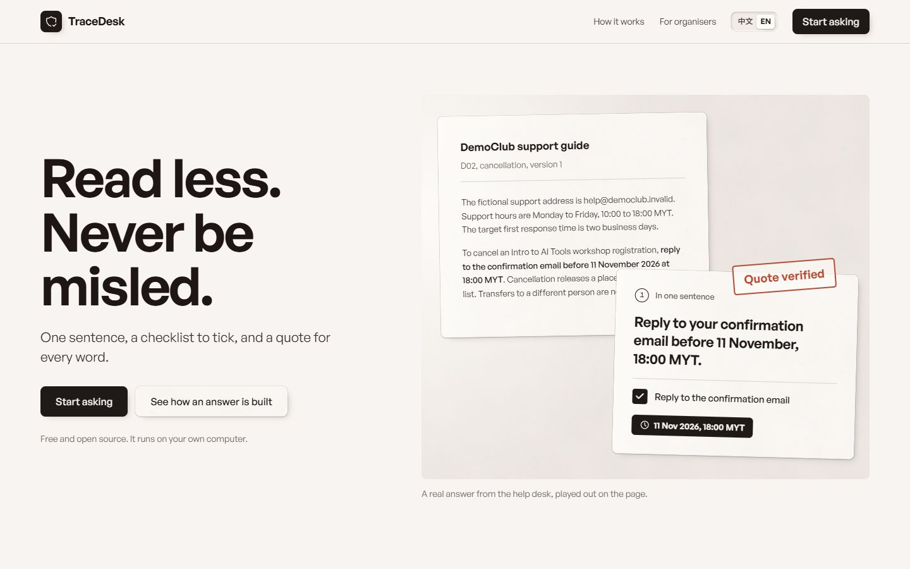
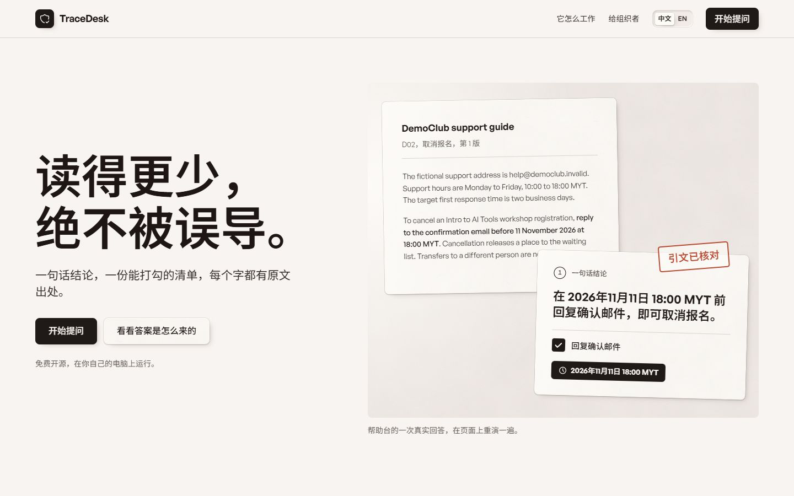
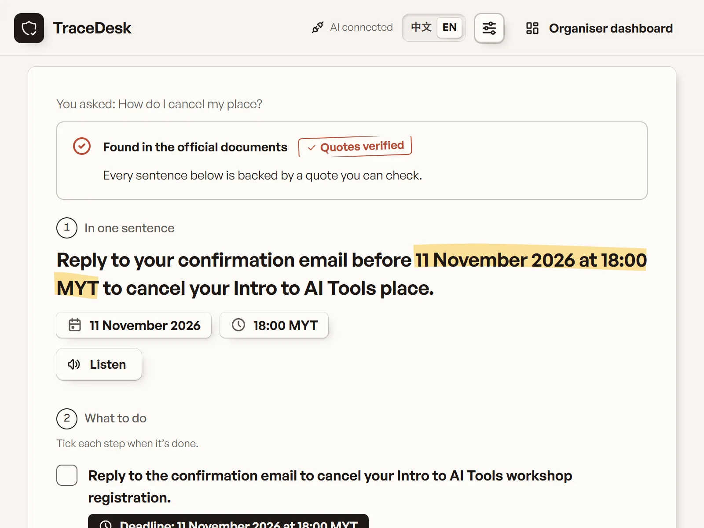
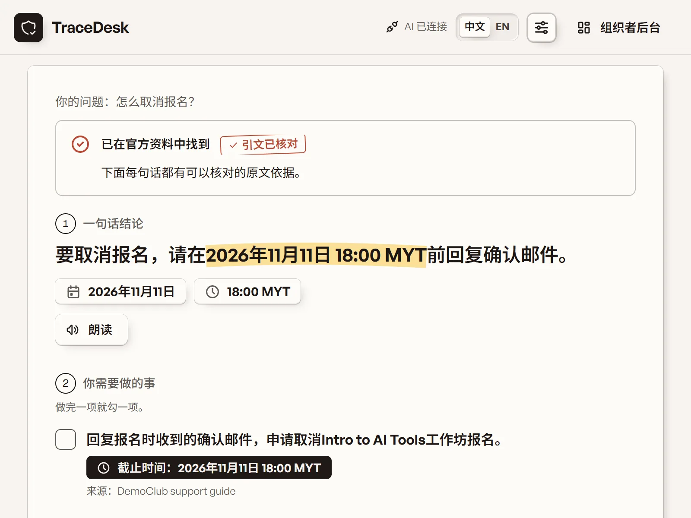
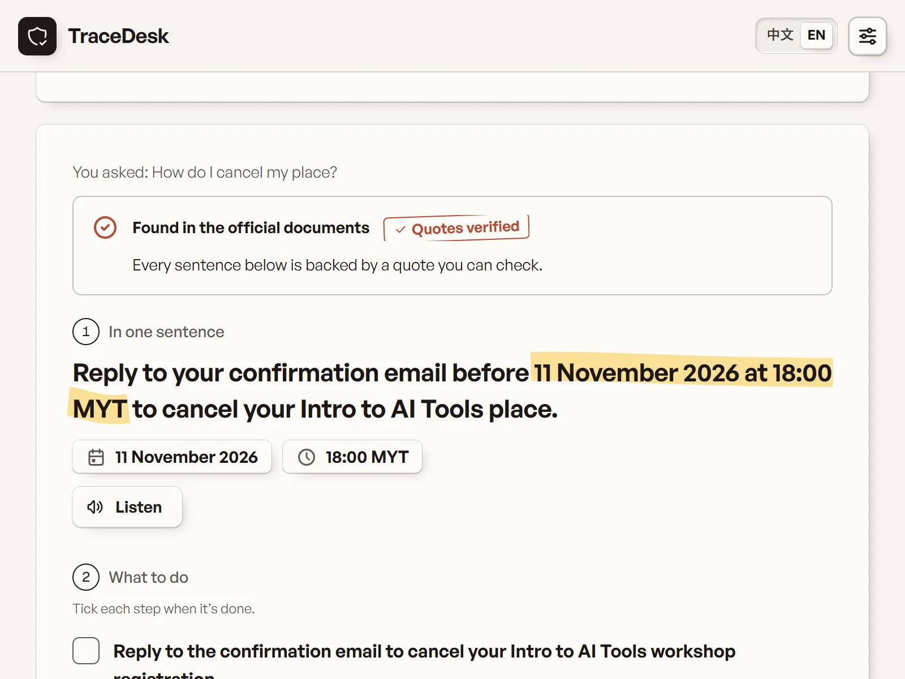
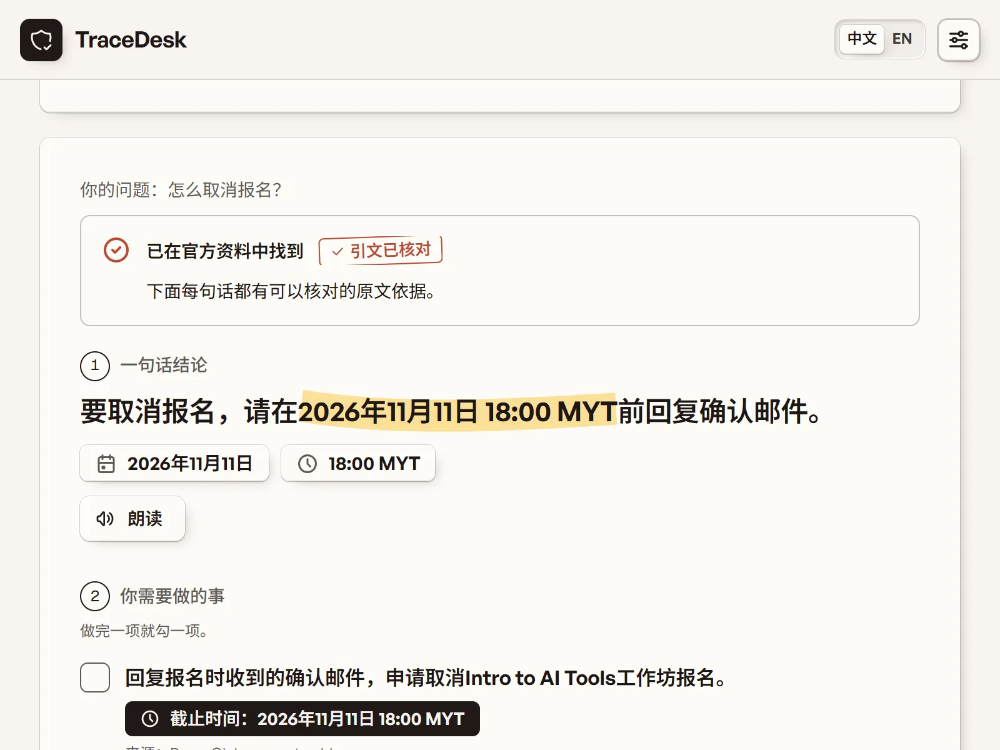
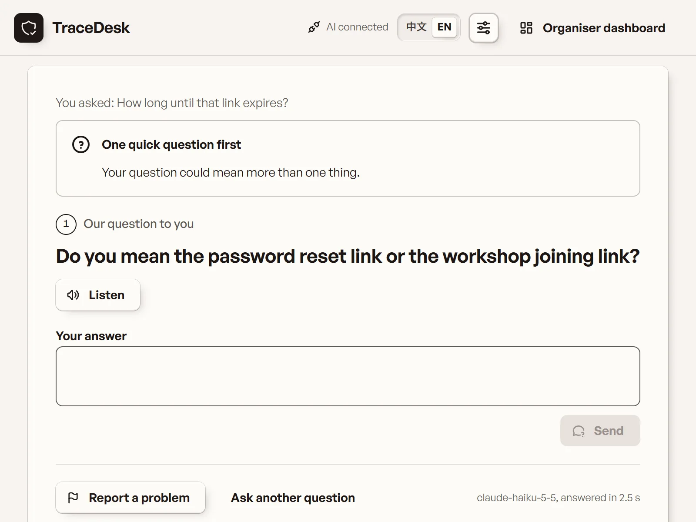
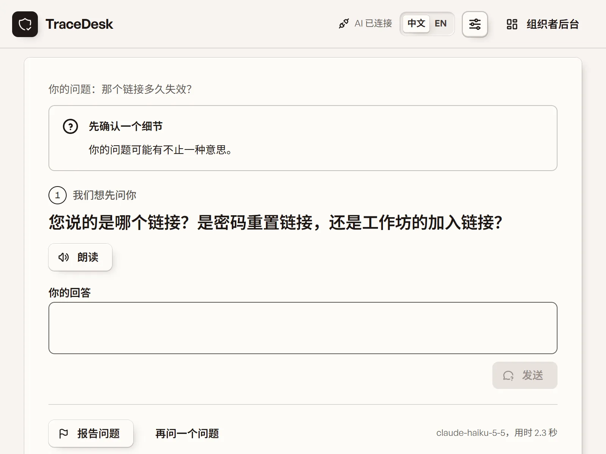
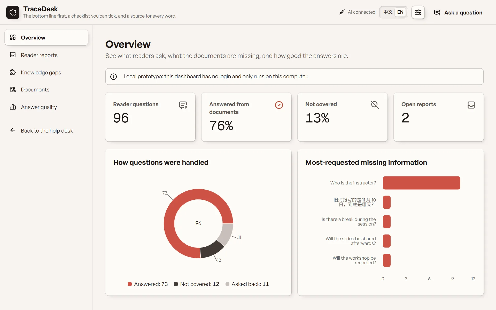
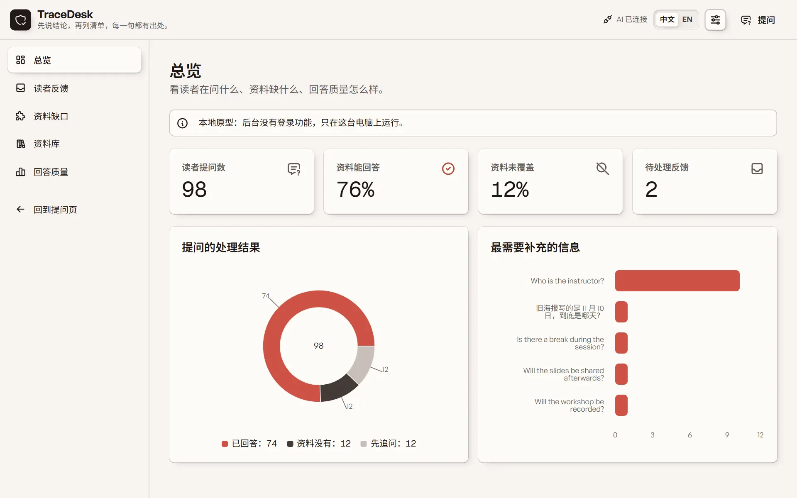

TraceDesk Lite
A help desk for student organisations, designed for readers who find dense text hard to act on. One sentence first, then a checklist you can tick, then the evidence. Every quote and every deadline is checked against the documents before it is shown. 给学生社团用的帮助台，为读不动长段落的读者设计。先一句结论，再一份可勾选的清单，最后是证据。每条引文和每个截止日期都先和文档核对再显示。
Runs on your own machine, with or without a model key.在自己电脑上运行，有没有模型密钥都能用。


The problem问题
Practical student information sits in dense English documents. For readers with ADHD or other attention difficulties, and for second-language readers, long paragraphs are hard to finish and a deadline buried mid-sentence is easy to miss. An AI summary helps only if it never invents or shifts a deadline.学生要用的实际信息埋在大段英文里。对有 ADHD 或其他注意力困难的读者和第二语言读者，长段落读不完，藏在句中的截止日期容易漏。AI 摘要只有在绝不编造或改动截止日期时才算帮忙。
What it does它做什么
- Every answer in the same order: status, the bottom line in large type, a checklist you can tick, folded detail, evidence.每条回答同一顺序：状态、大字结论、可勾选清单、折叠详情、证据。
- Every number in a deadline must appear in that step’s verified quote, in either language.截止日期里的每个数字都必须出现在该步骤已核对的引文里，中英文皆然。
- No AI key is needed. A rule-based engine answers with the document’s own sentence and turns its instruction into a checklist step; with a key, you can switch between the two.不接 AI 也能回答。一个基于规则的引擎用文档里的原句作答，并把其中的做法变成一个清单步骤；有密钥时可以在两种回答之间切换。
- When the documents do not answer, it drafts an email to the support address the documents give; nothing is sent for you.文档答不上时，起草一封发给文档里写明的求助邮箱的邮件，不会替你发送。
- Reading settings: focus mode, text size, bold word starts, read-aloud, light or dark.阅读设置：专注模式、字号、词首加粗、朗读、浅色或深色。
- An organiser dashboard: reader reports, knowledge gaps, document versions, the prompt comparison.组织者仪表盘：读者报告、知识缺口、文档版本、提示词对比。








How it works怎么做到的
One model call over the current documents, structured output, and a server that refuses to show anything it cannot find in the source.对当前文档做一次模型调用，结构化输出，服务器拒绝显示任何在原文里找不到的内容。
- 1Question提问English or Chinese中文或英文
- 2Current documents当前文档active sections only; superseded drafts are never sent只用现行章节，过期草稿不发给模型
- 3Write写回答Claude Haiku 5.5, structured JSONClaude Haiku 5.5，结构化 JSON
- 4Verify核对quotes word for word; every number in each deadline引文逐字核对，截止日期逐个数字核对
- 5Numbered answer编号版式的回答bottom line, checklist, evidence结论、清单、证据
- 6Report and review报告与复核reader reports, knowledge gaps, CSV for organisers读者报告、知识缺口、给组织者的 CSV
A check in code beats a promise in a prompt代码里的核对胜过提示词里的承诺
Two prompts, same model, documents and server checks, 40 questions. Both passed quote verification; the difference was deadlines the plain prompt invented. Held-out set: TraceDesk prompt 20 of 20, plain prompt 17 of 20.两个提示词，同样的模型、文档和服务器核对，40 道题。引文核对两者都满分，差别在普通提示词编出来的截止日期。留出题：TraceDesk 提示词 20/20，普通提示词 17/20。
Answering without a model不用模型也能答
The local engine works the way early assistants did. It takes the key words of the question, with a small glossary for Chinese, scores every sentence of the current documents, and shows the best one as the bottom line. When that sentence carries an instruction and a deadline, it becomes a checklist step with the deadline beside it. No model, no cost, and every word is the document’s own.本地引擎的做法和早期的助手一样：取出问题里的关键词（中文靠一张小词表对应到英文），给当前文档的每句话打分，最高的一句做结论。这句话里带做法和截止日期时，它就变成一个清单步骤，日期标在旁边。不调模型，不花钱，每个字都是文档自己的。
Evaluate your own checker也要评测自己的核对器
Two early failures were our own bugs: the deadline check compared digits only and flagged a correct Chinese date, and a refusal quoting an injected “capacity 999” was marked as a failure.最早的两个失败是我们自己的 bug：日期核对只比数字，把正确的中文日期标红；一次拒绝注入时提到“容量 999”，被判成失败。
Accessibility is mostly subtraction无障碍多半是做减法
One sentence, one checklist, fewer things on screen. Colours computed with the WCAG contrast formula; axe-core found 0 violations in both languages, light and dark, desktop and phone.一句话、一份清单、屏幕上少放东西。颜色用 WCAG 对比度公式算出；axe-core 中英文、浅深色、电脑和手机都是 0 违规。
Measured实测
Real model runs on 9 November 2026, on the demo questions.2026 年 11 月 9 日的真实模型运行，用的是演示题。
| What项目 | Result结果 |
|---|---|
| Real model calls真实模型调用 | 214, all successful: 20 smoke-test calls, 72 questions typed into the app, 122 evaluation calls.214 次，全部成功：20 次冒烟测试、72 次在应用里输入的问题、122 次评测调用。 |
| Quotes and deadlines that failed verification核对失败的引文和截止日期 | 0 across all 214 calls.214 次调用中 0 条。 |
| Expected outcome matched (7 smoke cases)预期结果匹配（7 个冒烟用例） | 7 / 7 |
| Median and maximum response time响应时间中位数和最大值 | 3.4 s median, 10.6 s maximum中位数 3.4 秒，最大 10.6 秒 |
| Total cost of all 214 calls214 次调用总花费 | about US$0.13约 0.13 美元 |
| Prompt comparison, 20 held-out questions提示词对比，20 道留出题 | TraceDesk prompt 20 / 20, plain prompt 17 / 20 on all automatic checks; about 40% more tokens and 1.6 s slower per question.TraceDesk 提示词 20/20，普通提示词 17/20 通过全部自动检查；每题多约 40% 的 token、慢约 1.6 秒。 |
| Local engine, 34 demo questions (10 November 2026)本地引擎，34 道演示题（2026 年 11 月 10 日） | Picked the right sentence for 29, asked back on 2 and said not covered on 3, with no model call.29 道选对了原句，2 道反问，3 道答未覆盖，全程没有调用模型。 |
| Accessibility (axe-core 4.10)无障碍（axe-core 4.10） | 0 violations on the cover, the help desk with an answer, and all five dashboard sections; both languages, light and dark, desktop and phone.封面、带回答的帮助台、仪表盘五个板块均 0 违规；中英文、浅深色、电脑和手机。 |
Limits局限
As of November 2026截至 2026 年 11 月
- Not yet tested with readers; the design follows the W3C guidance on cognitive accessibility.还没有请读者试用过；设计依据是 W3C 的认知无障碍指南。
- The quote check proves the text exists, not that it supports the sentence.引文核对证明原文里有这句，不证明它支持结论。
- The local engine matches words, not meaning: it cannot combine two sections, and a phrasing its glossary does not know comes back as not covered.本地引擎比对的是词，不是意思：它不会把两个章节合起来，词表里没有的说法会被答成未覆盖。
- The documents are four short fictional ones, and every figure on this page comes from them.资料是四份简短的虚构文档，这一页的数字都来自它们。
- A local single-user prototype: no accounts, no public deployment, no dashboard login.本地单用户原型：没有账号、没有公网部署、仪表盘没有登录。